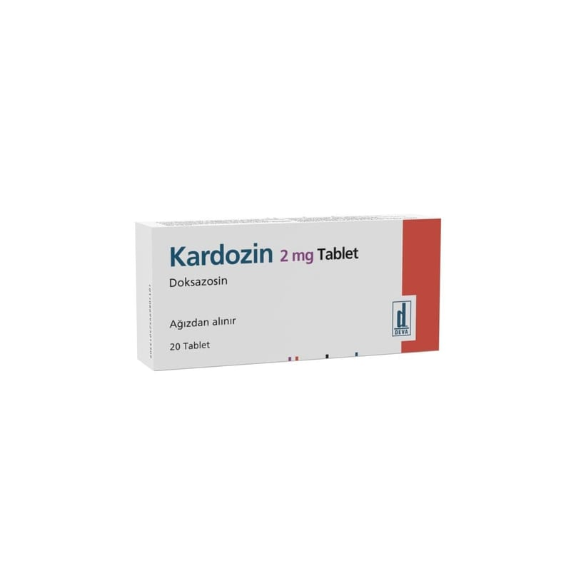

Kardozin 2 mg Tablet, 20 Adet

Ne için kullanılır
KT · Bölüm 1KARDOZ İN, 20 tablet içeren blister ambalajlarda bulunur. KARDOZİN alfa-blokerler adı verilen bir grup tansiyon ilacından biridir. Yüksek kan basıncını veya erkeklerde prostat bezinin büyümesinin neden olduğu belirtileri tedavi etmek için kullanılır. KARDOZ İN kan damarlarını genişletip kanın damarlardan daha kolay geçmesini sağlayarak, yüksek kan basıncının (hipertansiyon) tedavi edilmesi için kullanılabilir. Bu, kan basıncının
düşmesine yardımcı olur. Kan basıncını düşüren tek ilaç ile yeterli derecede kontrol altına alınamayan hastalarda KARDOZİN, diğer tansiyon ilaçları ile birlikte kullanılabilir. Prostat bezinde büyüme olan hastalarda KARDOZİN, idrara çıkma zorluğu ve/veya sık idrara çıkma tedavisi için kullanılır. Bu durum prostat bezi büyümüş hastalarda yaygındır. KARDOZİN, mesane çıkışı ve prostat bezi etrafındaki kası rahatlatarak kolay idrara çıkış sağlar.